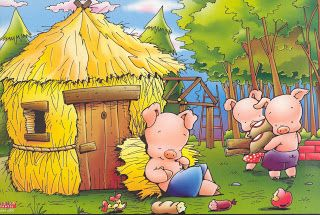

El cerdito más pequeño, que era muy vago, decidió que su casa sería de paja. Durante unas horas se dedicó a apilar cañitas secas y en un santiamén, construyó su nuevo hogar. Satisfecho, se fue a jugar. – ¡Ya no le temo al lobo feroz! – le dijo a sus hermanos. El cerdito mediano era un poco más decidido que el pequeño pero tampoco tenía muchas ganas de trabajar. Pensó que una casa de madera sería suficiente para estar seguro, así que se internó en el bosque y acarreó todos los troncos que pudo para construir las paredes y el techo. En un par de días la había terminado y muy contento, se fue a charlar con otros animales. – ¡Qué bien! Yo tampoco le temo ya al lobo feroz – comentó a todos aquellos con los que se iba encontrando. El mayor de los hermanos, en cambio, era sensato y tenía muy buenas ideas. Quería hacer una casa confortable pero sobre todo indestructible, así que fue a la ciudad, compró ladrillos y cemento, y comenzó a construir su nueva vivienda. Día tras día, el cerdito se afanó en hacer la mejor casa posible. Sus hermanos no entendían para qué se tomaba tantas molestias. – ¡Mira a nuestro hermano! – le decía el cerdito pequeño al mediano – Se pasa el día trabajando en vez de venir a jugar con nosotros. – Pues sí. ¡Vaya tontería! No sé para qué trabaja tanto pudiendo hacerla en un periquete… Nuestras casas han quedado fenomenal y son tan válidas como la suya. El cerdito mayor, les escuchó. – Bueno, cuando venga el lobo veremos quién ha sido el más responsable y listo de los tres – les dijo a modo de advertencia. Tardó varias semanas y le resultó un trabajo agotador, pero sin duda el esfuerzo mereció la pena. Cuando la casa de ladrillo estuvo terminada, el mayor de los hermanos se sintió orgulloso y se sentó a contemplarla mientras tomaba una refrescante limonada. – ¡Qué bien ha quedado mi casa! Ni un huracán podrá con ella. Cada cerdito se fue a vivir a su propio hogar. Todo parecía tranquilo hasta que una mañana, el más pequeño que estaba jugando en un charco de barro, vio aparecer entre los arbustos al temible lobo. El pobre cochino empezó a correr y se refugió en su recién estrenada casita de paja. Cerró la puerta y respiró aliviado. Pero desde dentro oyó que el lobo gritaba: – ¡Soplaré y soplaré y la casa derribaré! Y tal como lo dijo, comenzó a soplar y la casita de paja se desmoronó. El cerdito, aterrorizado, salió corriendo hacia casa de su hermano mediano y ambos se refugiaron allí. Pero el lobo apareció al cabo de unos segundos y gritó: – ¡Soplaré y soplaré y la casa derribaré! Sopló tan fuerte que la estructura de madera empezó a moverse y al final todos los troncos que formaban la casa se cayeron y comenzaron a rodar ladera abajo. Los hermanos, desesperados, huyeron a gran velocidad y llamaron a la puerta de su hermano mayor, quien les abrió y les hizo pasar, cerrando la puerta con llave. – Tranquilos, chicos, aquí estaréis bien. El lobo no podrá destrozar mi casa. El temible lobo llegó y por más que sopló, no pudo mover ni un solo ladrillo de las paredes. ¡Era una casa muy resistente! Aun así, no se dio por vencido y buscó un hueco por el que poder entrar. En la parte trasera de la casa había un árbol centenario. El lobo subió por él y de un salto, se plantó en el tejado y de ahí brincó hasta la chimenea. Se deslizó por ella para entrar en la casa pero cayó sobre una enorme olla de caldo que se estaba calentado al fuego. La quemadura fue tan grande que pegó un aullido desgarrador y salió disparado de nuevo al tejado. Con el culo enrojecido, huyó para nunca más volver. – ¿Veis lo que ha sucedido? – regañó el cerdito mayor a sus hermanos – ¡Os habéis salvado por los pelos de caer en las garras del lobo! Eso os pasa por vagos e inconscientes. Hay que pensar las cosas antes de hacerlas. Primero está la obligación y luego la diversión. Espero que hayáis aprendido la lección. ¡Y desde luego que lo hicieron! A partir de ese día se volvieron más responsables, construyeron una casa de ladrillo y cemento como la de su sabio hermano mayor y vivieron felices y tranquilos para siempre.
